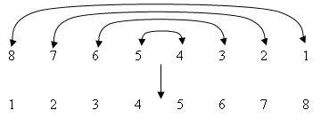
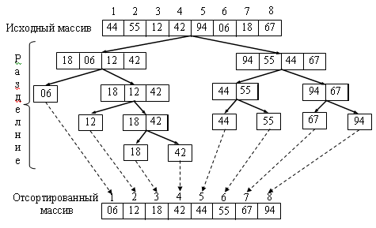
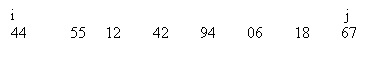
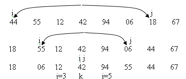
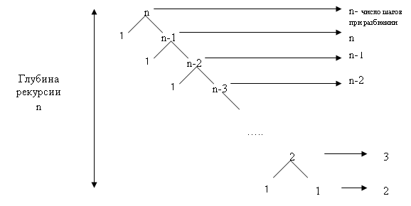
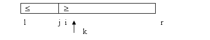
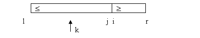

|
|
|
Итеративный алгоритм сортировки разделением
Сортировка разделением является улучшением обменной сортировки (пузырьковой сортировки). Хотя пузырьковая сортировка среди элементарных методов считается в среднем самой неэффектной, ее улучшение – быстрая сортировка является самым лучшим на данный момент методом сортировки массивов. Метод был предложен Хоором и назван быстрой сортировкой [ 5 ]. В этом методе для достижения наилучшей эффективности перестановки производятся на большие расстояния, как и в методе Шелла. Если взять массив, отсортированный в обратном порядке, и поменять местами первый и последний элементы, затем второй и предпоследний и т. д., то можно отсортировать массив за n/2 обменов 
Такой способ, к сожалению, не дает эффекта
для неупорядоченных массивов, но
подсказывает другую схему перестановок.
При просмотре элементов с обоих концов
массива элементы массива А[l .. r]
переставляются таким образом, чтобы
элементы A[l .. k]
были не больше любого элемента из A[k+1
.. r], где k – некоторый индекс на
интервале [l ...r] , l Затем операция рекурсивно выполняется для частей A[l .. k] и A[k+1 .. r] до тех пор, пока размер части не станет равным 1. После этого массив отсортирован.  Общий ход быстрой сортировки имеет вид: QSort (A [l .. r] )
1.
2. if l < r 3. then k ← Partition (A[l .. r]) 4. QSort (A[l .. k]) 5. QSort (A[k+1 .. r]) 6. return Основной операцией является операция разделения массива на две части с описанными выше свойствами. Чем лучше она работает, тем эффективнее работает алгоритм в целом.
Разделение массиваНаугад берется элемент массива в качестве опорного, относительно которого массив разбивается на две части. Часть массива A[l .. k] будет содержать элементы, не большие х,, а вторая часть A[k+1…r] – элементы, не меньшие х. Разделение происходит при просмотре
массива с двух концов. Вначале
просматривается массив от конца до тех пор,
пока не буде найден элемент A[j]  Допустим, в качестве опорного значения х взят ключ 42.  После разбиения по рекурсии разделяются первая часть A[l…k] и вторая часть A[k+1…r] тем же способом. В приведенном примере опорный элемент выбран удачно, и массив оказался поделенным на две равные по размеру части.
Partition (A[l .. r]) 1. x ← A[ (l+r)/2 ] 2. i ← l - 1 3. j ← r +1 4. while ←TRUE 5. do repeat j ← j - 1 6. until A[j] ≤ x 7. repeat i ← i + 1 8. until A[i ] ≥ x 9. if i < j 10. then t ← A[i] 11. A[i] ← A[j] 12. A[j] ← t 13. else return j Реализация алгоритма разбиения содержит ряд тонких моментов. Во-первых, не очевидно, что при встречном просмотре при разделении индексы i и j не выйдут за пределы участка l .. r в процессе работы. Во-вторых, разбиение зависит от того, насколько удачно выбран опорный элемент х. Если разбиения происходят на примерно равные по размеру части, то трудоемкость быстрой составляет О(n logn). В худшем случае, если размеры частей сильно отличаются, трудоемкость пропорциональна O(n2) и снижается к эффективности метода сортировки вставками. В самом деле, если в качестве опорного элемента все время выбираем минимальный элемент, то разбиение делит участок A[l .. r] на две части. Одна из них содержит один минимальный элемент, а вторая – остальные. Дерево рекурсии в этом случае выглядит так:
 Тем не менее, для больших по размеру массивов в среднем случае на последовательных рекурсиях получаются и худшие и лучшие разделения, а асимптотическая оценка эффективности быстрой сортировки совпадает с оценкой для наилучшего случая, то есть O(n logn). Часть разделений будут хорошо сбалансированы, часть - нет. Как показали теоретические и экспериментальные исследования 80% разделений дают соотношение размеров частей 9:1. Но, поскольку "хорошие" раделения уменьшают размер частей в два раза, то логарифмическая асимптотика сохраняется, и оценка эффективности остается логарифмической. Увеличивается лишь константа пропорциональности. Итак, эффективность метода в значительной степени зависит от удачного выбора разделяющего элемента. Вероятность удачного выбора равна 1/n. Слепой случайный выбор опорных элементов не отличается от оптимального и дает почти те же результаты. Это показали и теоретические исследования, и многочисленные эксперименты. Метод сортировки разделением имеет недостатки: он неэффективен для небольших размеров массивов - n. Алгоритм не любит упорядоченные массивы. Еще одно неприятное свойство – это проблема глубины рекурсии. Как известно, вызов функции образует в системном стеке кластер, в котором сохраняются точка возврата из функции, входные параметры функции, локальные переменные. Для больших массивов глубина рекурсии может быть значительной, особенно. если "плохих" разделений много. Количество кластеров в стеке колеблется от log n до n. Это может привести к переполнению стека и отказу системы. Для решения этой проблемы предлагается итеративная версия быстрой сортировки. Итеративный алгоритм сортировки разделениемИтеративный алгоритм использует собственный стек разделений. На каждом этапе возникают две следующих части. Только к обработке одной части можно приступить сразу же , другая часть заносится в стек. Каждая часть запоминается в стеке в виде левого и правого индекса. Часть, помещенная в стек первой, будет в дальнейшем выбрана из стека последней. С расчетом на худший случай разделений размер стека должен быть равным 2n. Iterative_QSort (A [1 .. n])
1.
2.
3. stack[1] ← 1 4. stack[2] ← n 5. top ← 1 6. repeat 7. l ← stack[top] 8. r ← stack[top+1] 9. top ← top - 2 10. if l < r 11. then 12. repeat 13. i ← l - 1 14. j ← r + 1 15. x ← A[ (l + r)/2 ] 16. repeat 17. repeat i ← i + 1 18. until A[i] ≥ x 19. repeat j ← j - 1 20. until A[j] ≤ x 21. if i ≤ j 22. then 23. t ← A[i] 24. A[i] ← A[j] 25. A[j] ← t 26. until i ≥ j 27. if i = r or j = l 28. then if i = r 29. then r ← i – 1 30. else l ← j + 1 31. else if i - l > r - i 32. then top ← top+2 33. stack[top] ← l 34. stack[top+1] ← i - 1 35. l ← i 36. else 37. top ← top +2 38. stack[top] ← i 39. stack[top+1] ← r 40. r ← i - 1 41. until l ≥ r 42. until top = -1 43. return
Выбор разделяющего элементаНесмотря на утешительные результаты при случайном выборе разделяющего элемента, допускающего чередование "плохих" и "хороших" разделений, предлагаются методы выбора разделяющего элемента - медианы, который будет делить массив на две равные по размеру части. Это приближает быструю сортировку к оптимальной. Хоор [ 5 ] предложил выбирать разделяющий элемент в неупорядоченном массиве случайным образом, то есть задавать индекс в виде случайного числа. Такой алгоритм сортировки называется вероятностным. Для задания индекса можно использовать генератор случайных чисел. Такой способ показал хорошую эффективность. Еще один способ поиска разделяющего элемента, близкого к медиане, известен, как "метод медианы трех ", когда в качестве разделяющего элемента используется средний из трех случайно выбранных элементов массива. Этот метод существенно снижает возникновение вероятности худшего случая, поскольку вероятность выбора сразу двух наименьших или двух наибольших значений существенно ниже вероятности выбора одного наименьшего или наибольшего значения. Например, для выбора опорного элемента "методом медианы трех" в качестве трех элементов можно взять элементы A[l], A[r], A[(l+r)/2] в разделяемой части массива A[l…r]. Есть способ точного определения медианы [ 5 ]. Для поиска медианы используется та же схема просмотра элементов, которая используется в алгоритме разделения при быстрой сортировке. Сначала применяется разделение относительно выбранного значения A[k]. Получаются значения индексов i и j такие, что 1) A[h] ≤ x для h < i 2) A[h] ≥ x для h > i 3) i < j Возможны три варианта: 1) x слишком мало и искомое значение ищется в большей правой части:  2) x слишком велико и искомое значение ищется в большей левой части:  3) k лежит в интервале j<k<i и элемент A[k] является медианой. Процесс разделения продолжается до появления случая 3. Find_median ( A [ n.. k ] )
В среднем, каждое разбиение уменьшает размер следующего просматриваемого подмассива. Таким образом, на поиск медианы потребуется n+n/2+n/4+…+1=2n шагов. Но в худшем случае этот метод дает O(n2) шагов. Его не следует использовать для небольших массивов. В общем, приведенный алгоритм поиска медианы является частным случаем задачи вычисления порядковых статистик. Задача заключается в следующем: дан неупорядоченный список из n элементов и целое число k. Необходимо найти ключ элемента, который стоит в отсортированном списке этих элементов на k - й позиции. Это задача нахождения k - й порядковой статистики. Специальные случаи этой задачи – нахождение минимального и максимального элементов. Это задачи нахождения порядковой статистики при k = 1 и k = n. В этих случаях задача выполняется за время, пропорциональное O(n). |
|
|